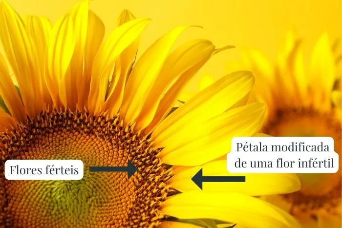
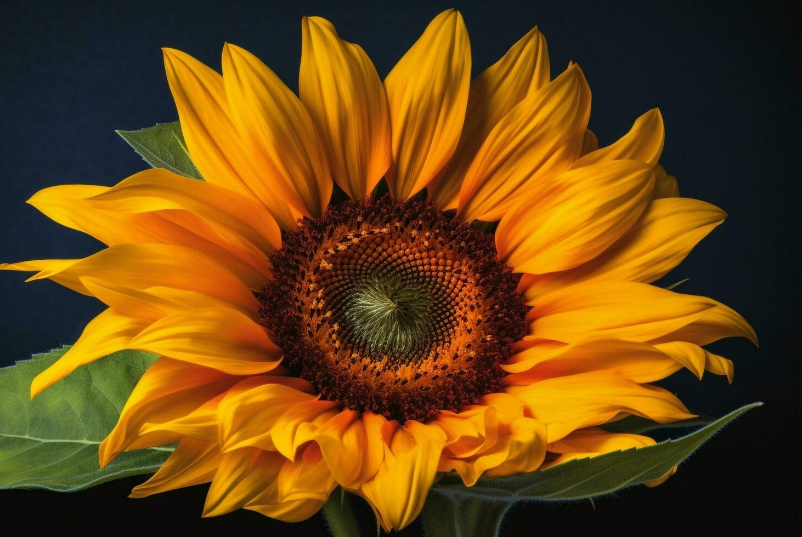

"Girassol (Helianthus annuus L.) é uma planta originária da América do Norte, e o início do seu cultivo se deu pela população indígena dessa região, cerca de 3000 anos a.C. O girassol foi levado para a Europa pelos colonizadores e introduzida como cultivo no Brasil apenas no final do século XIX. O girassol é uma planta que remete a sentimentos de felicidade e alegria devido à sua coloração viva em tons amarelos e alaranjados. Além dos significados que representa em diferentes comunidades, o girassol tem grande importância econômica com impactos significativos no setor de alimentação e produção de ração para aves, suínos e bovinos.Pertence à família Asteraceae, uma das maiores famílias das angiospermas. O girassol-anão, girassol-sol-noturno e girassol-sol-vermelho são alguns dos tipos de girassóis. O girassol é usado na alimentação de seres humanos e outros animais, na ornamentação e na produção de biocombustível. A auxina é um hormônio vegetal responsável pelo movimento do girassol em direção ao sol. O fruto do girassol é o que é popularmente denominado (de maneira incorreta) semente. Além da sua importância econômica, o girassol é importante fonte de néctar para polinizadores. O girassol é uma planta adaptável a diferentes tipos de clima, sendo cultivado em todo o Brasil. Todo o capítulo do girassol leva até 15 dias para florescer.Uma outra característica importante do girassol é que a estrutura que se encontra no topo, grande e amarela que comumente é chamada de “flor”, é, na verdade, uma *inflorescência*. A inflorescência do girassol é do tipo capítulo, seu diâmetro pode variar de 6 a 40 cm e conter de 100 a 8.000 flores. As flores que formam o capítulo são de dois tipos: Tubulosas: flores férteis. São as flores propriamente ditas, formadas por cálice, corola, androceu e gineceu, e que, quando fecundadas, formam os frutos. Uma inflorescência pode conter entre 1.000 e 1.800 flores férteis. Liguladas: flores inférteis. São incapazes de ser fecundadas e produzir frutos. Possuem ovário, cálice e uma corola modificada em formato de pétala. Cada uma das pétalas amarelas que vemos em um girassol são, na verdade, a corola modificada de uma das 30 a 70 flores inférteis que formam a inflorescência do girassol."
As inflorescências podem ser definidas como um sistema de ramos que possuem flores dispostas de maneira variada. Muitas vezes confundidas como uma flor única, como é o caso das margaridas, as inflorescências, na verdade, são vários conjuntos dessas estruturas.
